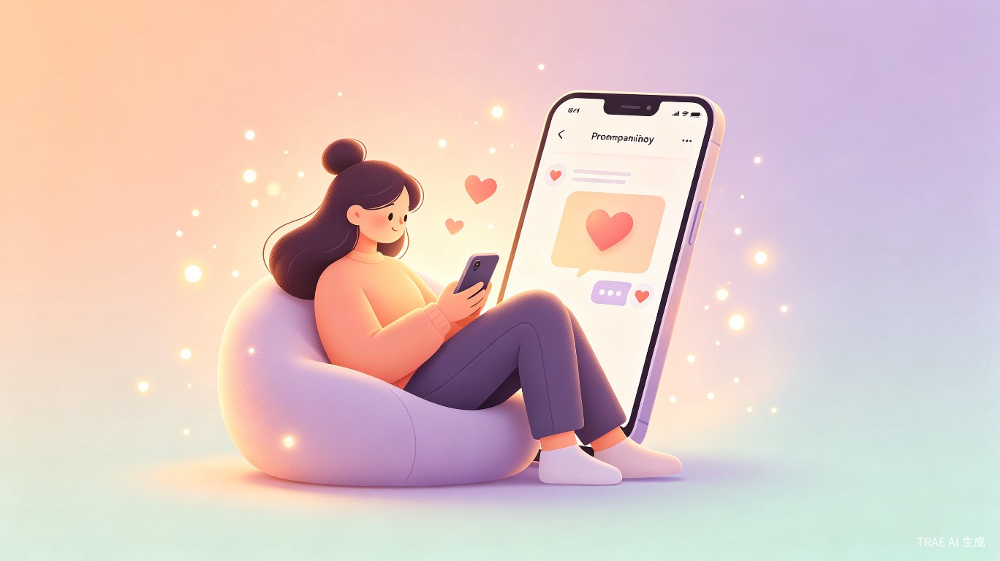
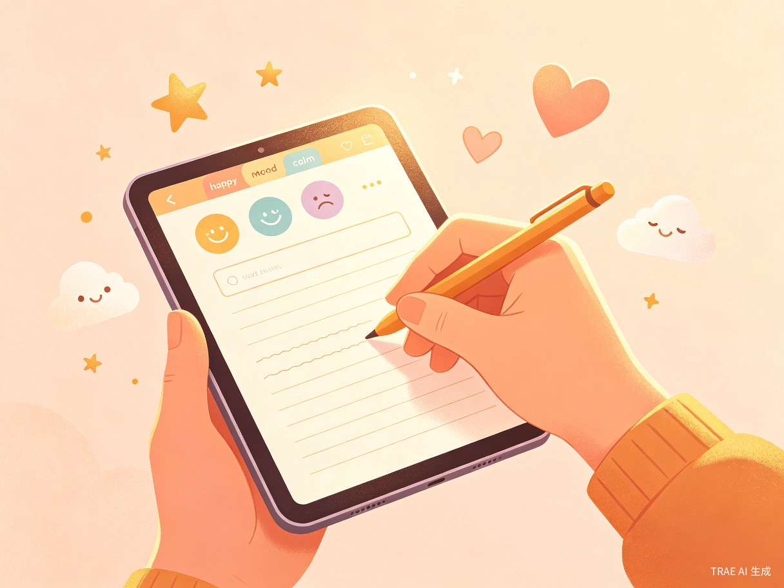
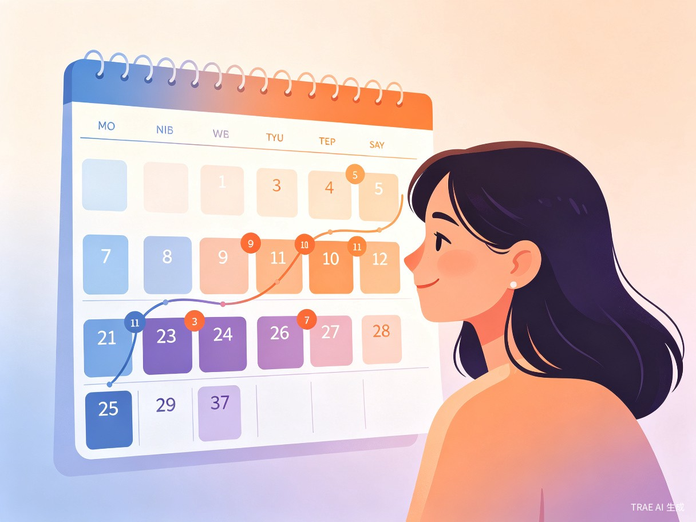

创意介绍
听你说是一款面向大众用户的 AI 陪伴产品。用户可以随时记录自己的心情、分享日常的喜怒哀乐，AI 会像一个真正的朋友一样回应——开心时陪你一起笑，低落时给你温暖的鼓励。
它不是心理咨询工具，不是情绪管理系统，而是一个温暖的 AI 陪伴师。没有诊断，没有评估，没有"建议你..."的专业术语，只有"我理解你"、"你已经做得很好了"的朋友式回应。
我们想解决什么问题
现代人的倾诉需求远远没有被满足。微信朋友圈有社交压力，不能真正表达负面情绪；纸质日记没有回应，缺乏陪伴感；现有的心理健康 App 太"重"了，用户心理负担大——"我有心理问题才用"。我们希望填补这个空白：一个零压力的、每天都可以来的倾诉空间。
为什么会想到做这个
我们观察到，很多人在社交平台上展现的都是精心修饰过的自己，而真实的情绪——工作上的挫败、学习中的焦虑、生活中的迷茫——往往无处安放。AI 技术的发展让我们有机会创造一个"永远在线、永远耐心、永远温暖"的倾听者。
产品形态
一款 Web 应用（响应式设计，手机/电脑均可使用），核心是心情日记 + AI 陪伴对话的结合。
目标用户及痛点
面向哪些用户
所有想记录日常心情、需要一个倾诉对象的人。不限定年龄、职业或场景。无论是学生面对考试压力、职场新人感到迷茫、还是任何人在某个瞬间想找人说说话——这个产品都是为你准备的。
使用场景
睡前回顾
一天结束，记录今天的心情和发生的事
即时倾诉
突然感到低落或焦虑，想找人说说话
快乐分享
遇到开心的事，想让更多人感受到你的喜悦
自我觉察
回顾情绪变化轨迹，更好地了解自己
当前痛点
😰 朋友圈不能说真话
社交平台有表演压力，负面情绪无处表达
📖 纸质日记没有回应
写完了就放在那里，缺乏互动和陪伴感
🏥 心理 App 太"重"了
Wysa、Woebot 等产品治疗导向强，用户心理负担大
🤖 AI 聊天缺乏温度
ChatGPT 等通用 AI 回应冰冷，没有朋友感
核心功能

功能一：心情记录
用户写下今天的心情、发生的事、想说的话。支持文字输入、情绪标签选择（开心、平静、低落、焦虑、愤怒等），以及可选配图。记录本身就是一种情绪释放。
功能二：AI 温暖回应
这是产品的核心。AI 对用户的记录做出回应，但不是以"专家"的身份，而是以"朋友"的身份：
🌞 正面内容：共情 + 放大快乐
"太棒了！你一定很有成就感。这种被认可的感觉真的很好，值得好好记住这一刻。"
🌠 低落内容：倾听 + 温暖鼓励
"我理解你的感受，换做是我也会觉得很难受。但你已经做得很好了，允许自己慢慢来。"
功能三：情绪日记时间线
可视化回顾过去的心情变化轨迹——日历视图、时间线视图、情绪趋势图。帮助用户更好地了解自己的情绪模式，不是诊断，而是自我觉察。

功能四：AI 陪伴对话
在日记之外，用户可以随时和 AI 聊天。AI 记得之前的对话内容，会主动关心你今天怎么样。不是问答式的，是对话式的——像朋友一样自然交流。
与现有产品的差异化
| 维度 | 心理健康 App | 社交平台 | 通用 AI 聊天 | 听你说 |
|---|---|---|---|---|
| 定位 | 心理治疗工具 | 社交表演场 | 万能助手 | AI 陪伴朋友 |
| 语气 | 专业、治疗性 | 社交表演性 | 冰冷、工具性 | 温暖、朋友感 |
| 使用场景 | 有困扰时才打开 | 有精彩时才发 | 有问题时才问 | 每天都想来聊聊 |
| 用户心理 | "我有心理问题" | "我要维护人设" | "我要查信息" | "我想找人说说话" |
| 社交压力 | 低 | 极高 | 无 | 零 |
市场数据支撑
中国心理健康市场正在快速增长，但现有产品存在严重的"场景错配"问题：要么太专业（心理治疗），要么太公开（社交平台），要么太冰冷（通用 AI）。一个温暖、轻量、零压力的情绪陪伴产品，正处于市场空白地带。
价值与意义
💡 商业价值
情绪日记是高频使用场景，用户粘性强。可扩展个性化陪伴风格、主题日记模板、情绪分析报告等付费功能。全球心理健康市场规模达 950 亿美元，年增长率 15%。
🌍 社会价值
为缺乏倾诉渠道的人提供一个安全的出口。特别是青少年群体——近半数抑郁高风险青少年每天不想上学，厌学检出率 15.8%。一个温暖的 AI 陪伴，可能就是某个人黑暗中的一束光。
🎨 创新价值
"AI 陪伴师"是一个全新的产品定位，区别于所有现有心理健康产品和社交平台。它不是治疗工具，不是社交平台，而是一个全新的品类：情绪陪伴。
技术方案
本产品使用 TRAE Work / TRAE IDE 进行 AI 辅助开发，充分利用大模型能力实现核心功能。
前端
响应式 Web 应用，HTML/CSS/JS
后端
Node.js / Python，TRAE AI 辅助
AI 能力
大模型 API，情绪识别 + 共情回应
数据存储
Supabase / SQLite
AI 核心能力
情绪识别
分析用户输入文本的情绪倾向（正面/负面/中性），精准感知用户状态。
共情回应生成
根据情绪和内容生成温暖、个性化的朋友式回应，通过精心设计的 Prompt 确保语气自然。
上下文记忆
记住用户的历史记录和对话内容，提供连贯的陪伴体验，让 AI 真正"认识"你。
公益价值叠加
本产品同时报名"青少年身心健康"公益赛道。青少年群体最需要倾听和陪伴：
- 近半数抑郁高风险青少年每天不想上学
- 厌学检出率 15.8%，近三成发展为拒学行为
- 需求缺口 180 万例/年，注册心理医生仅 6 万人
- 学校心理教师配备落实率仅 42%
听你说可以为青少年提供一个零门槛、零压力、零成本的情绪出口，在他们最需要倾听的时候，永远有一个温暖的朋友在。